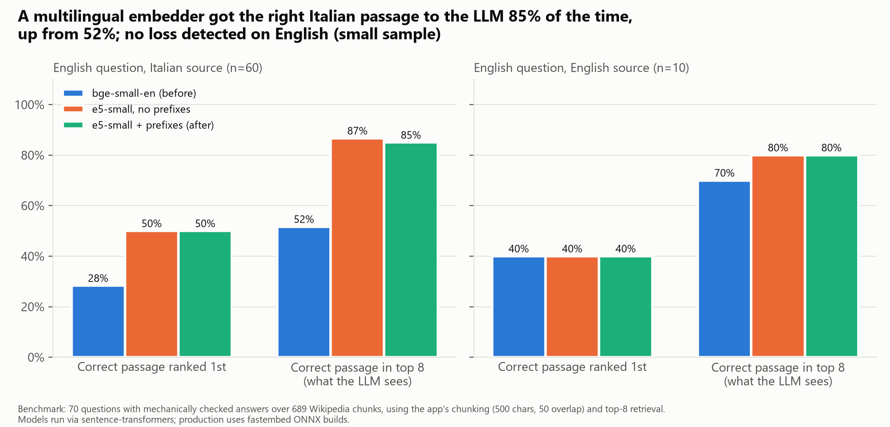
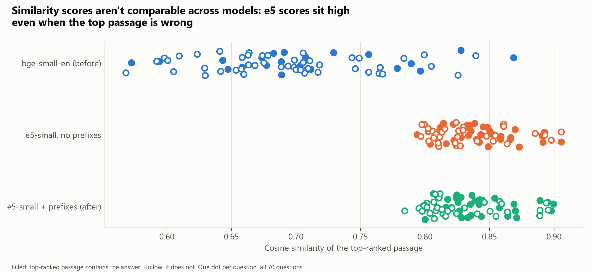
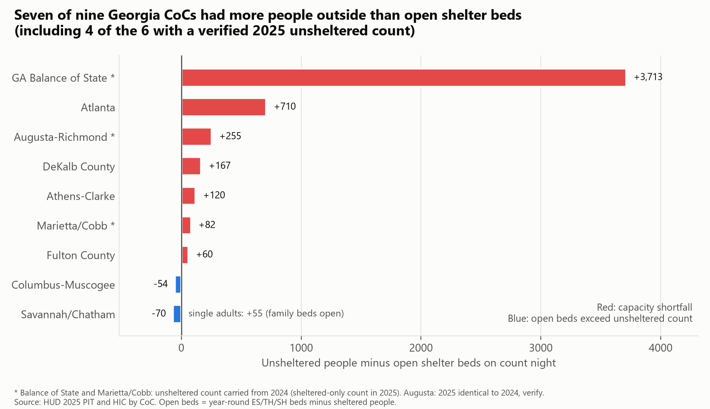
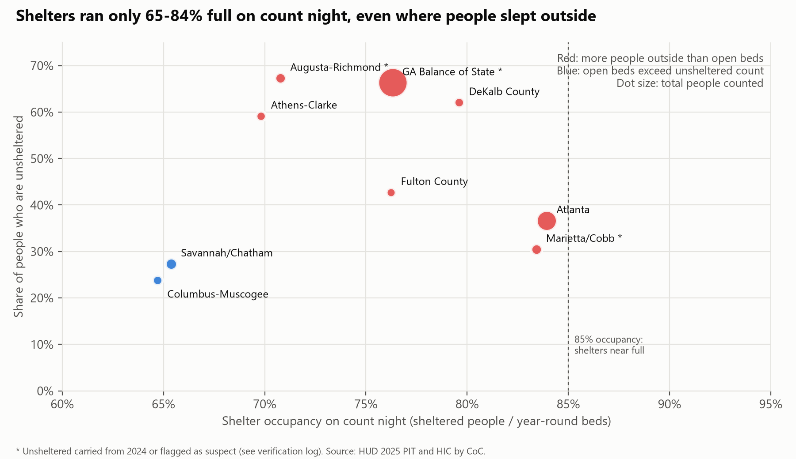
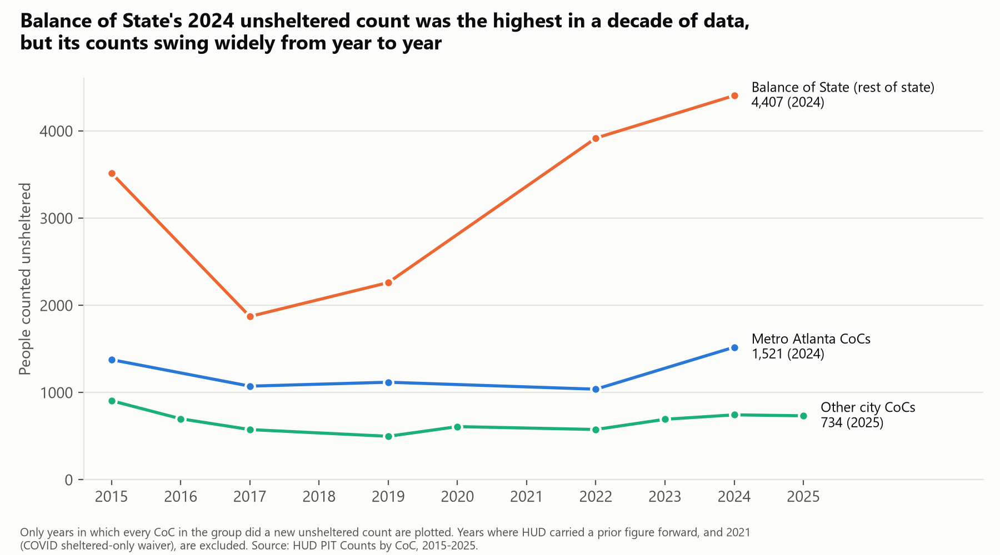

I measure whether the system actually got better.
Two case studies, each with a business question, a reproducible method, and the checks that changed my own first conclusion. Every number on this page traces back to a script or a source file.
AI Advisor
A retrieval-augmented advisor you assemble yourself. Name a public thinker and the app finds their channel, pulls the transcripts from their recent talks, indexes them beside their Wikipedia article, and then answers in their voice — from passages it actually retrieved, rather than from what a general-purpose model half-remembers about them.
Step one — build an expert
- Search
- Type a name — Douglas Rushkoff, say — and the app returns their Wikipedia bio so you can confirm it is the right person, alongside the YouTube channels most likely to be theirs, ranked by relevance.
- Add
- Press Add on the correct channel. Transcripts are pulled from that channel’s most recent videos, the Wikipedia article is folded in as a baseline, and the whole set is chunked and indexed for retrieval.
- Or paste
- A YouTube or Rumble video or channel URL dropped into the same box works too — name the expert when prompted and press Add from URL.
- Watch
- A progress card counts videos processed and chunks indexed, and labels each video as a single-narrator monologue or a multi-speaker conversation. That label is not cosmetic; it decides the voice the chat answers in.
- Manage
- The indexed-experts list expands to show an expert’s videos, download their transcripts, or remove the expert entirely.
Step two — ask them something
- Pick a voice
- The ASK dropdown lists everyone you have ingested next to the built-in advisors. Choose one to scope the conversation to them, or leave it on All experts and let the whole bench answer.
- Ask
- A question in the INQUIRY box retrieves the most relevant passages from that expert’s transcripts and answers from them, in their voice, streaming as it goes.
- Know who is speaking
- Every response opens with a bracketed note naming the voice. An expert built from monologues answers in one person’s tone; one built from interviews or panels answers in the aggregate tone of everybody in those videos.
- Keep or reset
- Follow-ups continue the thread. Switching the dropdown to a different expert starts a fresh conversation on its own, so contexts never bleed together.
- Stack
- Rust · retrieval-augmented generation over a locally built transcript index
- Sources
- YouTube and Rumble transcripts, with the subject’s Wikipedia article indexed alongside as a baseline
- Budget
- Ingestion is capped at 30 video fetches per hour and tracked by a budget bar. Where YouTube refuses anonymous fetching, importing your own cookies.txt lets ingestion run under your own account
- Access
- By invitation only. The gateway hands off to a sign-in before any part of the app is reachable
- Hosting
- Self-hosted and reached through an ngrok gateway rather than a cloud deployment, which is why the project page checks that it is up before sending you to it
One improvement, measured: multilingual retrieval
Answers drawn from Italian sources were noticeably worse than answers from English ones. I replaced the English-only search model with one that reads both languages, then benchmarked whether it actually helped.
| English question about an… | Before | After |
|---|---|---|
| Italian source: correct passage in top 8 (what the LLM sees) | 52% | 85% (21 won, 1 lost) |
| Italian source: correct passage ranked 1st | 28% | 50% (95% CI of gain +7 to +37 pts) |
| Italian source, excluding word-overlap questions (n=53), top 8 | 47% | 83% |
| English source (n=10), top 8 | 70% | 80% (no loss detected, small sample) |


Method
- Replaced the English-only embedder (bge-small-en-v1.5) with multilingual-e5-small (same 384 dimensions) and rebuilt the Qdrant collection.
- Enforced E5's
query:/passage:prefixes inside the embedder after confirming the library doesn't add them. - Benchmarked 70 questions over 689 Wikipedia chunks (Italian and English), using the app's chunking (500 characters, 50 overlap) and top-8 retrieval, scored by exact match on the gold answer text.
Recommendations
- Keep the multilingual embedder. Retrieval no longer depends on YouTube's rate-limited translation endpoint.
- Re-run the benchmark before every model change.
- Next: Italian-language questions, a 50+ question English set, a run on the production ONNX builds, and a cross-encoder reranker for top-1.
How I checked it
- I discarded my first evidence (similarity score 0.62 → 0.81) because scores aren't comparable across models.
- The original 32 questions are kept inside the 70. I expanded the set because the first interval crossed zero, and I'm disclosing that the stopping rule wasn't fixed in advance.
- The gain survives removing the questions that could be solved by word overlap, and the prefixes made no measurable difference.
Georgia homelessness: shelter capacity gaps by Continuum of Care
Business question
HUD's 2025 figures show 12,284 people experiencing homelessness in Georgia, 54% of them unsheltered. Is each Continuum of Care short of shelter beds, or does it have beds people aren't using? Funders need to know which, because the two problems need different investments.

Key findings
- 7 of 9 CoCs had more people outside than open beds, including 4 of the 6 with a verified 2025 unsheltered count. Atlanta: +710.
- Balance of State shows the largest gap (+3,713), but that figure uses its 2024 unsheltered count, which HUD carried into 2025. Its counts swing widely (1,873–4,407).
- Shelters were only 65–84% full. Columbus had more empty beds than people outside. In Savannah, about half the open beds were for families or youth, leaving single adults 55 beds short.
Recommendations
- Add shelter capacity in Atlanta and Balance of State.
- Columbus: check restricted beds (up to 43 of 357 are DV, veteran or youth beds) before funding outreach and lower-barrier entry instead of beds.
- Savannah: convert family units to adult beds.
- Augusta: confirm the 2025 count, which is identical to 2024.


How I checked it
- HUD reuses the prior unsheltered count in sheltered-only years. I found 11 such rows and excluded them from trends.
- The single-adult check overturned my first conclusion for Savannah.
- Limits: a single January night, no per-capita rates, and Balance of State's beds and people may be counties apart. Public aggregate data only.
Alfredo Alea
Data / AI Engineer looking for remote or hybrid roles in the EU. I build retrieval and data pipelines and the evaluation around them, and I report what the evidence supports, including the parts that didn't work. The Georgia analysis mirrors the type of work I led in a previous public-sector data role.